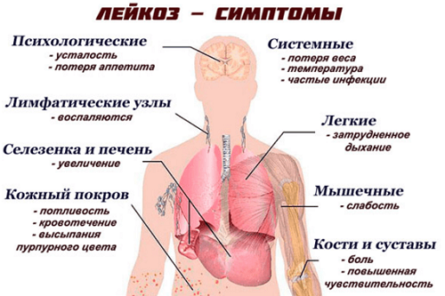
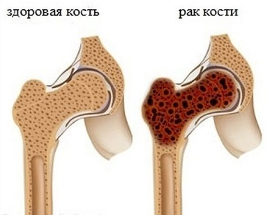
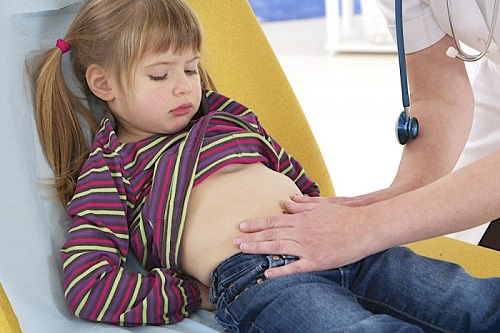

Детальное обсуждение диагностики и лечения рака не входит в компетенцию этой книги. Однако мы хотим, чтобы вы знали об основных симптомах рака у детей — тогда вы сможете рассказать врачу о наличии проблем. Симптомы могут быть разными в зависимости от того, какой орган или система поражены. Мы приводим наиболее распространенные среди детей виды рака и их симптомы.
ЛЕЙКОЗ И ДРУГИЕ ОНКОЛОГИЧЕСКИЕ ЗАБОЛЕВАНИЯ КРОВИ
Это наиболее часто встречающийся у детей вид рака. Его признаки вначале могут быть едва различимы, но со временем становятся очень заметными. Эти симптомы могут наблюдаться у детей по множеству причин, но наличие двух и более признаков из следующего списка должно настораживать:
Рак крови легко выявляется простым анализом крови. Обратитесь к своему врачу, если у вашего ребенка наблюдаются два и больше из перечисленных симптомов или вас волнует один из них.

РАК КОСТИ
Вот признаки, появление которых указывает на образование опухоли в кости:
Рак кости можно диагностировать рентгенологически. Обсудите со своим врачом любой из вышеперечисленных признаков.

ТКАНЕВЫЕ ОПУХОЛИ
Некоторые опухоли развиваются в мышцах или жировой ткани непосредственно под кожей. Вот несколько характерных для них признаков:
ОПУХОЛИ В БРЮШНОЙ ПОЛОСТИ
Боль в животе — самая частая из жалоб на боль у детей, но опухоли брюшной полости — самая редкая причина этой боли. Вот несколько признаков, которые могут быть сигналами:
РАК КОЖИ
У всех детей в первые годы жизни появляются невусы, которые затем могут постепенно увеличиваться. Рак кожи чрезвычайно редко встречается у детей, но важно знать признаки того, что невус превращается в злокачественную опухоль.
ОПУХОЛИ ГОЛОВНОГО МОЗГА
Родители склонны предполагать худшее, если ребенок жалуется на повторяющиеся головные боли, но опухоли головного мозга чрезвычайно редки у детей.

Здоровье ребенка от докторов Сирс / Сирс У. и др.